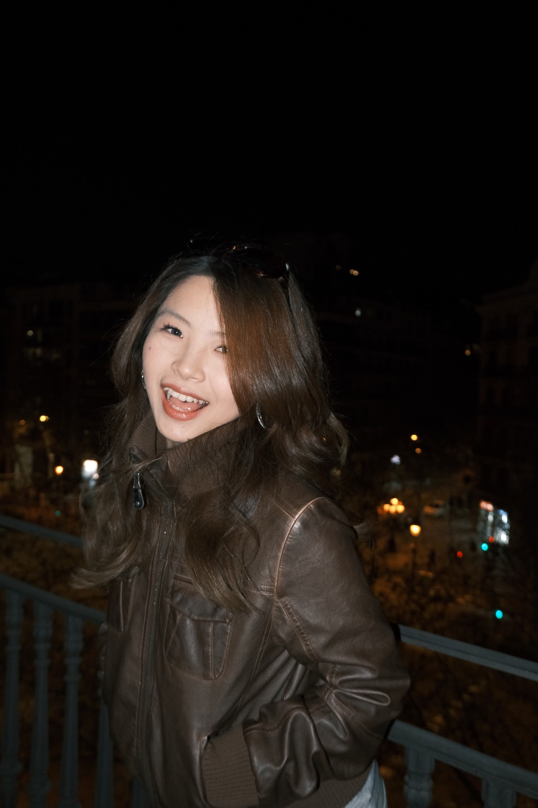

MSc Creative Industries and Cultural Policy student at the University of Glasgow, focused on digital marketing, content operations, social media strategy, livestreaming, and the creator economy.

I am a postgraduate student in Creative Industries and Cultural Policy at the University of Glasgow. My work sits between digital marketing, content production, audience research, and platform-based communication.
Through internships in audio and online education platforms, I have supported creator selection, livestreaming operations, content planning, scripting, editing, data tracking, and operational reporting.
I am looking for entry-level roles or internships in the UK across digital marketing, content operations, social media, creator partnerships, and platform-related marketing.
Campaign support, audience insight, content planning, and platform-native messaging for early-career marketing roles.
Short-form video trends, content calendars, captions, engagement signals, and community-facing communication.
Streamer coordination, session preparation, live interaction design, performance monitoring, and post-session review.
Creator discovery, creator support, platform governance, authenticity, monetisation, and audience trust.
I am open to entry-level opportunities and internships in digital marketing, content operations, social media, creator operations, and platform-related marketing roles in the UK.